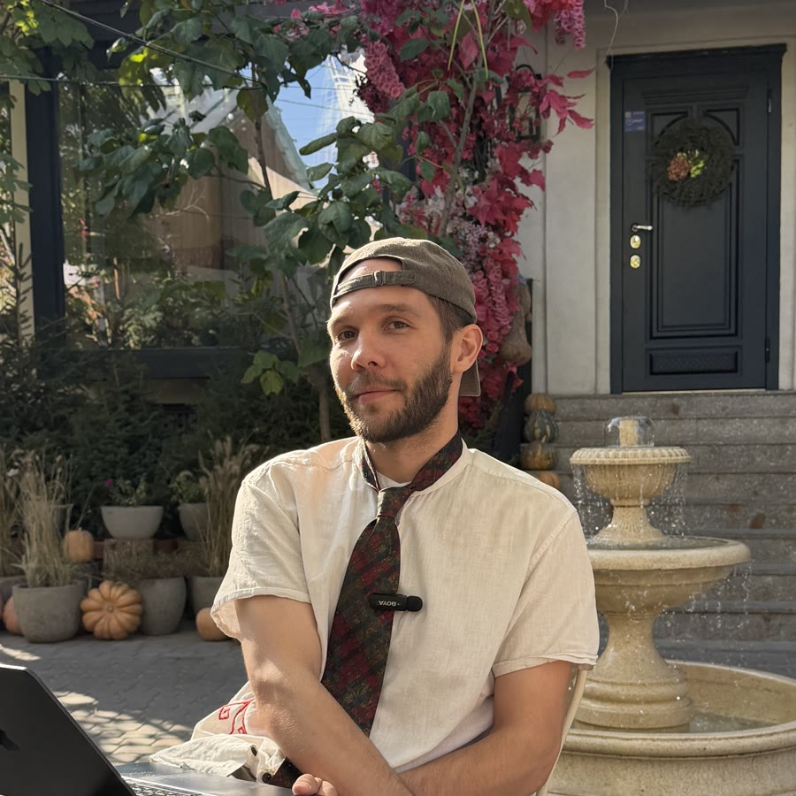

Тимофей Носов
Инженер, исследователь и преподаватель. Несколько лет руководил командами аналитиков данных в Yandex и работал над Яндекс Картами, а сегодня делает образовательные программы на стыке технологий и искусства. Учился в Simon Fraser University.